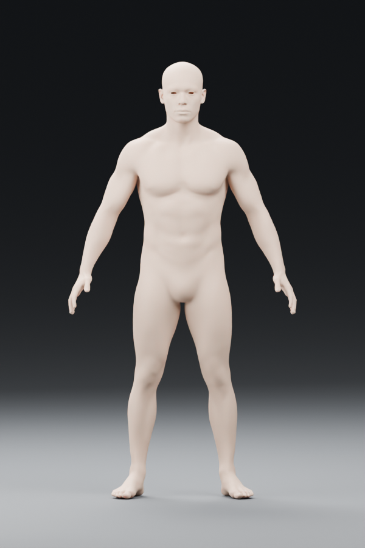
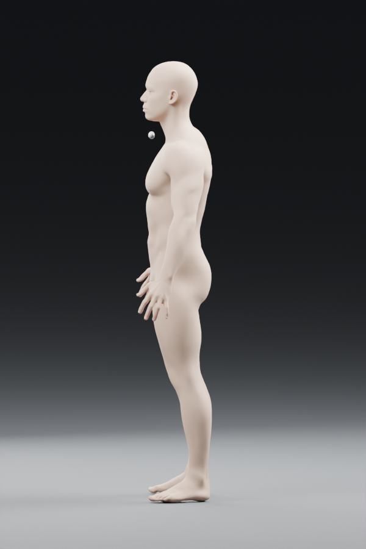
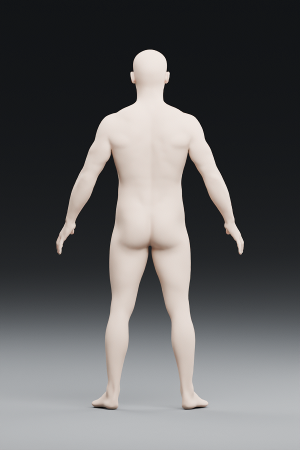
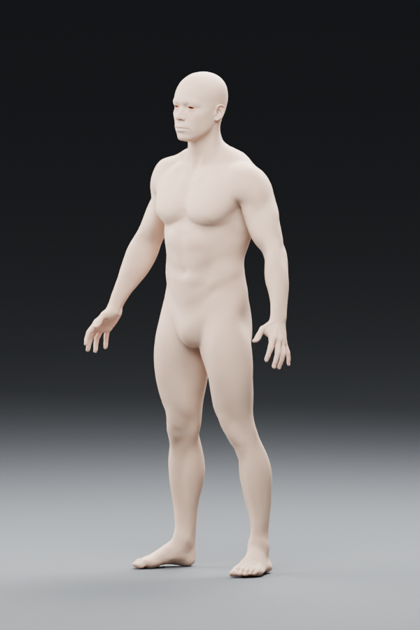

주의 — 이 자료는 완성된 무사시가 아닙니다.
의상·머리·얼굴 특징·무기를 제작하기 전의 인체 구조 원본입니다. 목표 시트와 외형 비교를 위한 완성본으로 승인하면 안 됩니다. 기존 V3의 자동 생성 의상은 사용하지 않았습니다.
의상·머리·얼굴 특징·무기를 제작하기 전의 인체 구조 원본입니다. 목표 시트와 외형 비교를 위한 완성본으로 승인하면 안 됩니다. 기존 V3의 자동 생성 의상은 사용하지 않았습니다.




원본 파일: musashi_anatomy_base_cc0.blend · 출처: blender.org/download/demo-files/ · 라이선스 CC0
다음 승인 대상은 이 인체가 아니라, 동일한 얼굴·머리·낡은 검은 겹옷·붉은 띠를 갖춘 새로운 3D 외형 모델입니다.